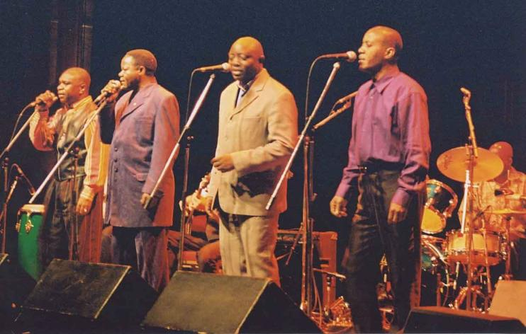

| hear |
| home page |
|  | Hortense Fuller, Founder - this African Music Webring site owned by Bikutsi 1 - back 2 . . Click on album photos above to access album reviews. com met up with legendary Congolese artist, Koffi Olomide, prior to his landmark Lincoln Center concert. com for one of the first extensive English language interviews with Le Grand Mopao. |
| " His CD showcases excellent songwriting with catchy melodies as well as first rate backing musicians throughout. 95 Qty I have to take this opportunity to promote my husband here. No matter what style of music people like, they all say the same thing, "His album is addicting. They put their hearts and souls on the line to make beautiful music for all to enjoy. He's working really hard to get his site completed, and if you'd like us to email you when it's done, click below. |